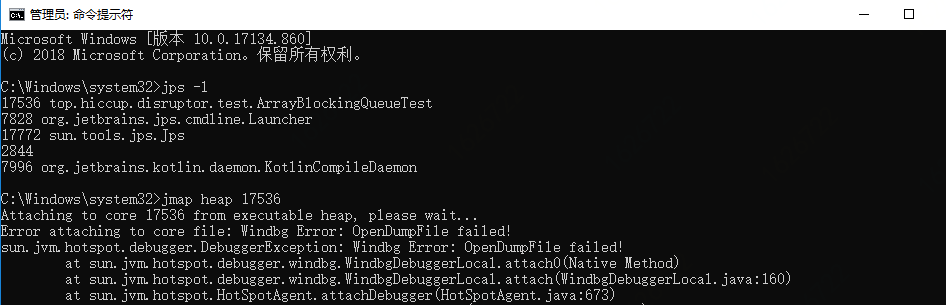

最近换了笔记本，新的工作环境下jmap命令居然在报错，而jps、jstat、jinfo、jstack都能正常使用，所以初步排除进程号的问题。
Attaching to core 17536 from executable heap, please wait...
Error attaching to core file: Windbg Error: OpenDumpFile failed!
sun.jvm.hotspot.debugger.DebuggerException: Windbg Error: OpenDumpFile failed!
at sun.jvm.hotspot.debugger.windbg.WindbgDebuggerLocal.attach0(Native Method)
at sun.jvm.hotspot.debugger.windbg.WindbgDebuggerLocal.attach(WindbgDebuggerLocal.java:160)
at sun.jvm.hotspot.HotSpotAgent.attachDebugger(HotSpotAgent.java:673)
at sun.jvm.hotspot.HotSpotAgent.setupDebuggerWin32(HotSpotAgent.java:569)
at sun.jvm.hotspot.HotSpotAgent.setupDebugger(HotSpotAgent.java:335)
at sun.jvm.hotspot.HotSpotAgent.go(HotSpotAgent.java:304)
at sun.jvm.hotspot.HotSpotAgent.attach(HotSpotAgent.java:156)
at sun.jvm.hotspot.tools.Tool.start(Tool.java:191)
at sun.jvm.hotspot.tools.Tool.execute(Tool.java:118)
at sun.jvm.hotspot.tools.PMap.main(PMap.java:72)
at sun.reflect.NativeMethodAccessorImpl.invoke0(Native Method)
at sun.reflect.NativeMethodAccessorImpl.invoke(NativeMethodAccessorImpl.java:62)
at sun.reflect.DelegatingMethodAccessorImpl.invoke(DelegatingMethodAccessorImpl.java:43)
at java.lang.reflect.Method.invoke(Method.java:498)
at sun.tools.jmap.JMap.runTool(JMap.java:201)
at sun.tools.jmap.JMap.main(JMap.java:130)同时，又试了下jmap heap xxx一个不存在的进程号（这里先埋个坑），还是报同样的错误，根据异常栈的信息，怀疑是Windows下的命令行没有管理员权限，无法访问dump文件，所以试了下以管理员运行CMD，然后jmap heap，然而还是报同样的错：

这下无助了，百度、stackoverflow逛了一圈也没找到解决问题的办法.....先放一放？
=
==============================华丽丽的分隔线==============================
=
大概过了不知道多久，猛地想起来 - - “是不是命令没敲对？”，jmap -h 走一波，仔细看截图中红框内容，然后羞愧的低下了头（一定是中秋月饼吃多了才导致的，嗯！）
如图jmap有三种用法，1、连接正在运行的进程 2、分析core文件，即dump文件 3、连接其他机器的JVM进程所以，上面jmap heap xxx命令的问题就出在搞忘记加 " - " 了，被jmap当作是要分析 “heap” 这个快照文件了，报错也就理所应当了。
JDK自带的工具包中，像jps、jmap、jstack等这些命令，指定option一般都是要带 “ - ” 的，而紧跟的参数是不带杠的，这点需要牢记。还有就是报异常了不要慌，一定要仔细读异常提示信息和异常栈，拿本例来说，其实第一行已经提示清楚了（小小吐槽下：要是把文件名也打印出来就更好了）